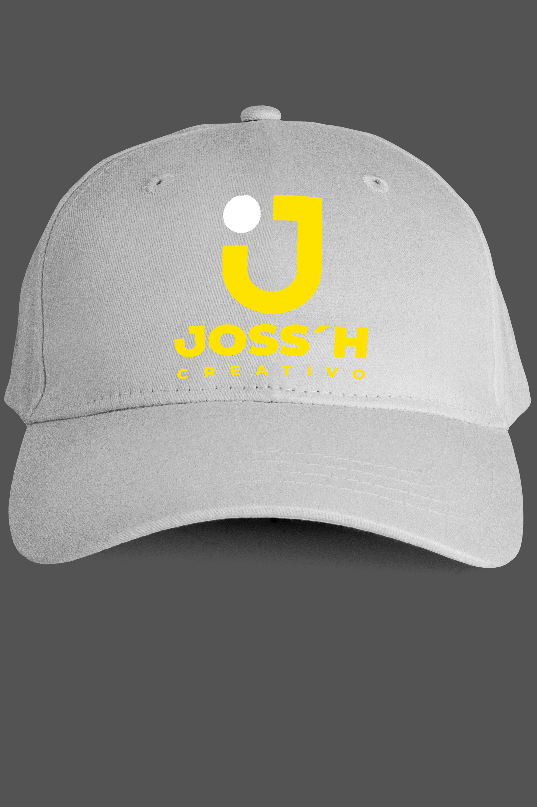
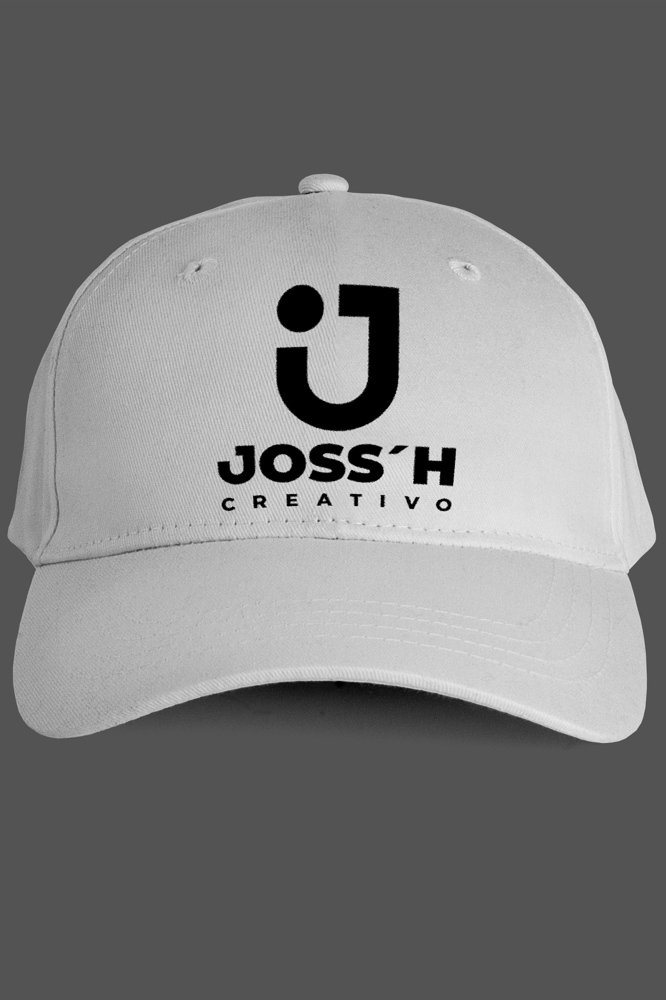
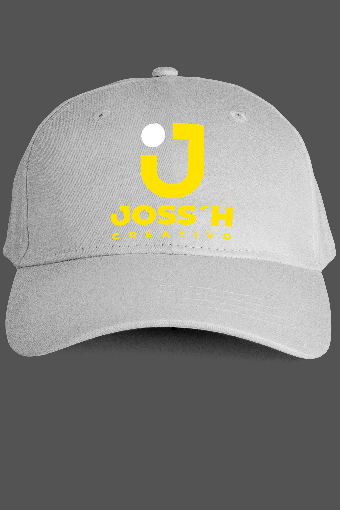
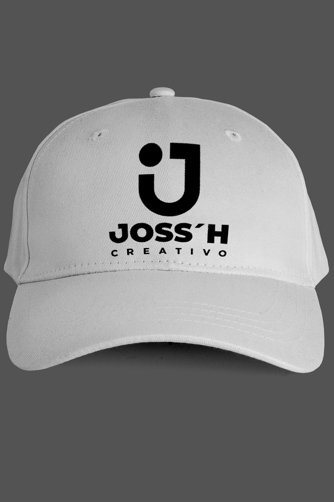
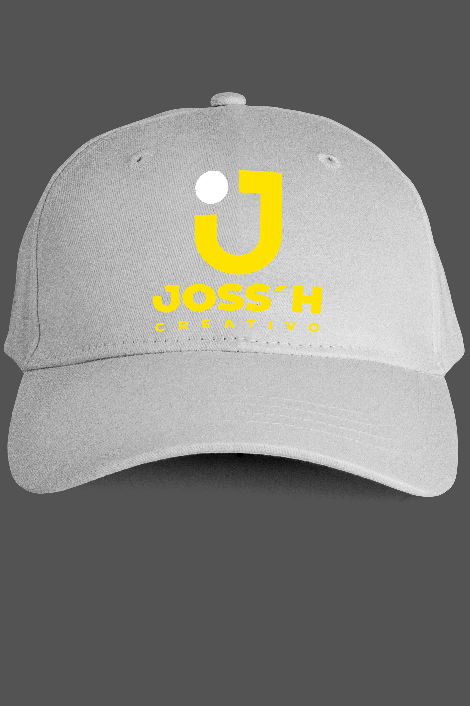
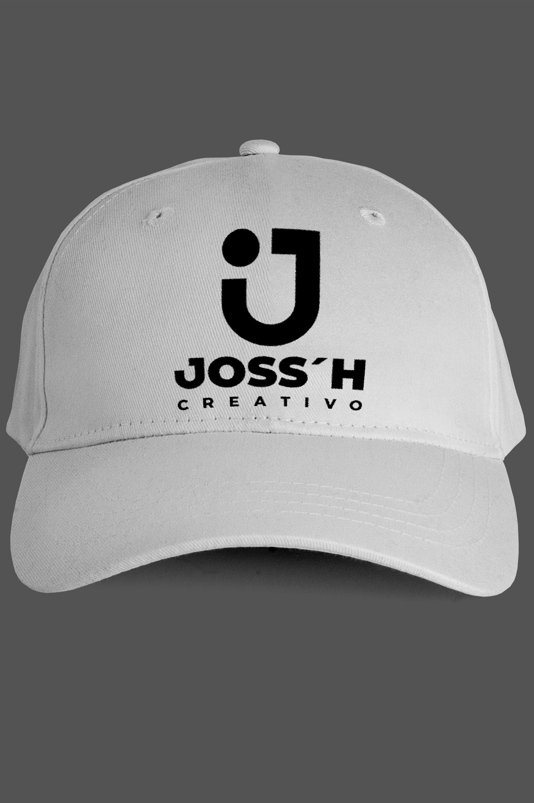
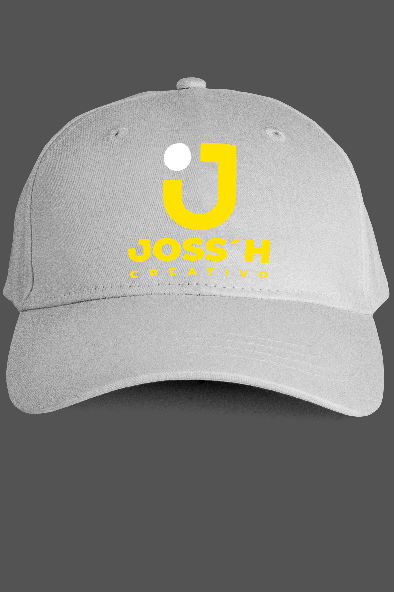
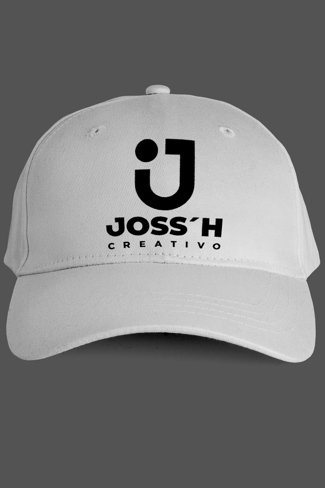

Joss'h es una agencia integral de publicidad especializada en el diseño y desarrollo de identidades visuales. Nuestro enfoque principal es proporcionar a emprendedores y medianas empresas un servicio completo que abarca desde la creación de logotipos hasta la consolidación de la identidad corporativa. En Joss'h, entendemos la importancia de una imagen de marca sólida para el crecimiento y reconocimiento en el mercado, por lo que trabajamos de cerca con nuestros clientes para diseñar soluciones personalizadas que reflejen su visión y objetivos.
En Joss'h, nuestra misión es empoderar a emprendedores y medianas empresas mediante la creación de identidades visuales sólidas y efectivas que reflejen su esencia y objetivos. Nos dedicamos a ofrecer soluciones integrales en diseño de logotipos, identidad visual y corporativa, así como en servicios publicitarios impresos, con el propósito de ayudar a nuestros clientes a destacarse en el mercado y alcanzar un crecimiento sostenible. Nos comprometemos a brindar un servicio personalizado y profesional que permita a cada marca contar su historia de manera impactante y coherente en todos los aspectos de su comunicación.
CORTO PLAZO (1-2 AÑOS): Establecernos como la opción preferida en nuestro mercado local para emprendedores y pequeñas empresas que buscan soluciones integrales en diseño de identidad visual y publicidad.
MEDIANO PLAZO (3-5 AÑOS): Expandir nuestras operaciones para cubrir un mercado regional más amplio, consolidándonos como un referente en el diseño de identidades corporativas y servicios publicitarios en impresión.
LARGO PLAZO (5-10 AÑOS): Convertirnos en una agencia de publicidad de renombre nacional, reconocida por nuestra innovación y excelencia en el diseño de identidades visuales y servicios publicitarios.